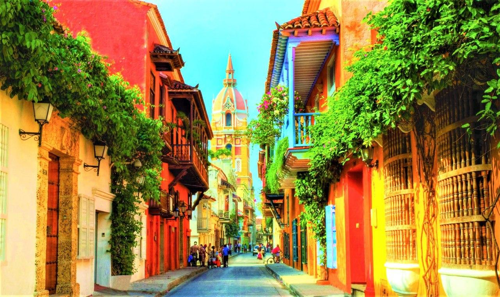

Colombia
inicio
colombia
imagendelabatalla
pdf
Independencia


La Independencia de Colombia fue el proceso que llevó al final el período de dominio del Imperio español en el actual territorio del país. Dicho proceso se libró en medio de un desarrollado entre 1810 a 1819 para emancipar los territorios que entonces comprendían el Virreinato de la Nueva Granada.
Simon Bolivar


De una familia de origen vasco que se hallaba establecida en Venezuela desde fines del siglo XVI, y ocupaba en la Provincia una destacada posición económica y social , Simón Bolívar nació en la ciudad de Caracas el 24 de julio de 1783. Sus padres fueron el Coronel don Juan Vicente Bolívar y Ponte, y doña Concepción Palacios Blanco.
Principales personajes de la independencia de Colombia
- Antonio nariño
- Simon Bolivar
- Francisco Jose de Caldas
- Jose Maria Carbonell
- Policarpa Salavarrieta
- Camilo Torres
- Antonio Morales Galvis
- Jose Acevedo y Gomez
- Jose Gonzales Llorente
Nombres historicos de Colombia
- La Gran Colombia
- Nueva Granada
- Confederacion Granadina
- Estados Unidos de Colombia
- Republica de Colombia
Participacion de los personajes mas importantes en la independencia de Colombia
- Personajes Masculinos
- Antonio Nariño
- Simon Bolivar
- Francisco Jose de Caldas
- Jose Maria Carbonell
- Personajes Femeninos
- Policarpa Salavarrieta
- Manuela Beltran
- Josefa Canelones
- Juana Bejar